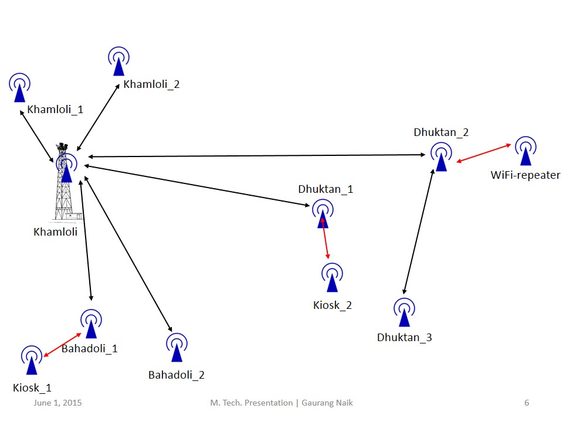
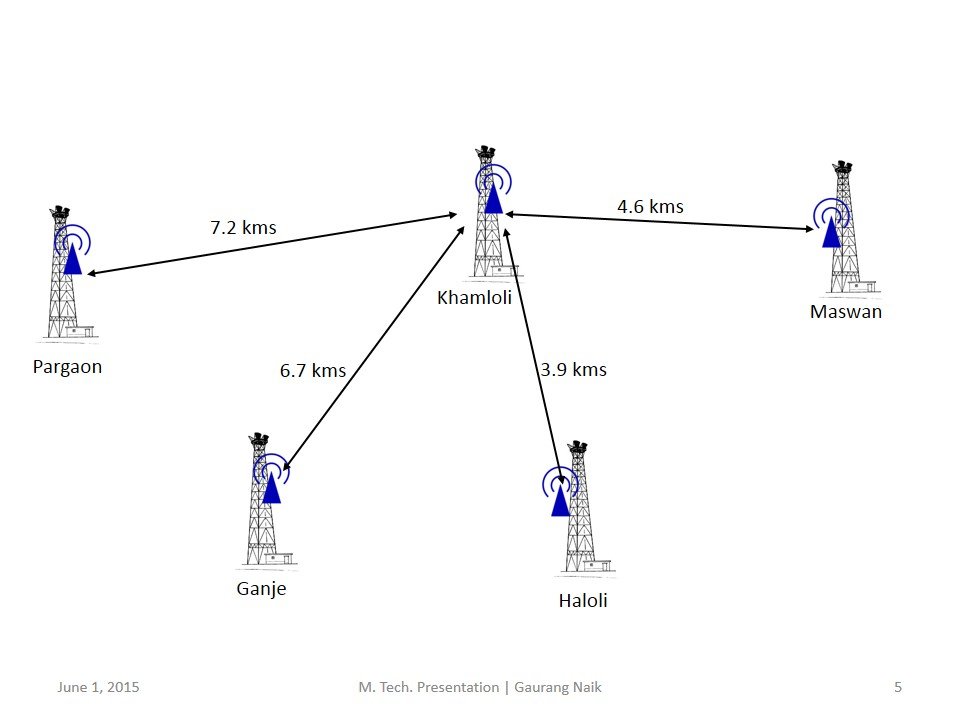

Network Configuration Details of Palghar Test-bed
Topology
The overall test-bed is divided into short-distance links and long distance links.
Short distance links

Long distance links

Network Configuration
The network configuration is explained in the image below.
The configuration of RouterBoard 433AH to operate in the routed AP and routed Client modes is given here.
Page maintained by Gaurang Naik.